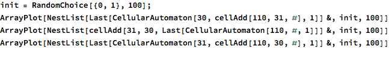
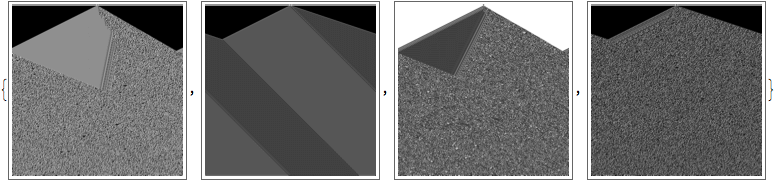
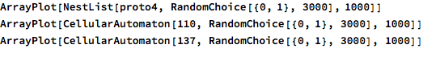

Notebook for experiments on idea/algorithm combination: genetic programming, evolution, enumeration, adjacent possible, paring away (abstraction), analysis (breaking down), synthesis (simulation), mixing (functional or blocks or encoding), network encoding.
Any form of encoding an idea/algorithm/program can be mixed, but which produce the most interesting results?
Example: algebraic structure definition made from string... but they tend to build on each other. See, randomness doesn’t work, you need preservation and building cumulatively, like a series of molecular reactions.
Start with CA: take two rules (list of eight binary digits) and combine them with sexual selection, random choice from each side 50/50 for each digit.

How interesting is that? Those diagonal ones have a very different behaviour. For reference, 30 and 110:

Clearly this method of combination doesn’t preserve the properties of complexity.

Wow! Combining two CA’s in series gives a new CA with dependence on the nearest five instead of the nearest three! And that process can keep on going! Also there are different diffusion slopes. Does this result in all possible 5-CAs? 2^(2^5)=4.3 billion ways. And 256*255=65 thousand ways. Totally different! Also seems that flipping the order gives the colour-reversed pattern.
The properties of the rules seem to actually mix together this time, and least for nonrandom inputs. But rule 30 somehow overpowers rule 110. You know what, the switched order is extremely similar but not actually the same! But just very, very slightly different. How odd. Now to test associativity: (110x31)x30=110x(31x30)?


It’s associative but not even a little commutative. Also (as seen below) the chaotic-ness of 30 has been damped out by the combination of 31 and 110, interestingly. So the properties really seem to be combining.
But not so here with a different combination of rules, so it’s unclear and needs further investigation. I want a more generalized function to combine combinations.


Imagine, combining two complex rules together kills them.